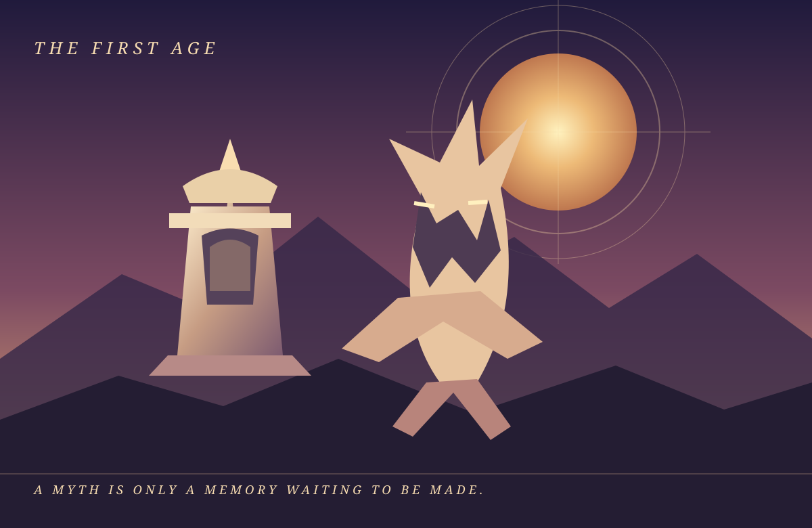
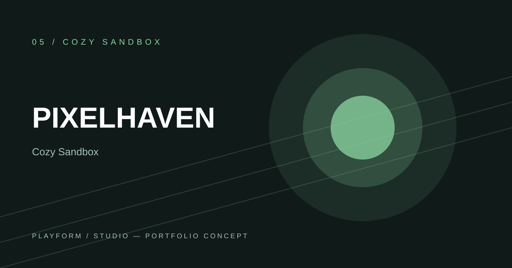
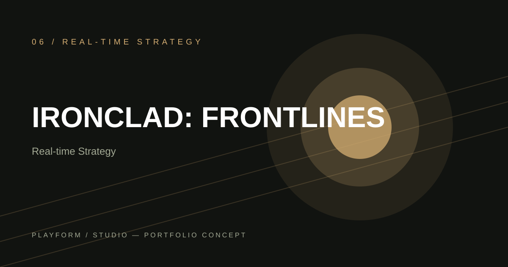
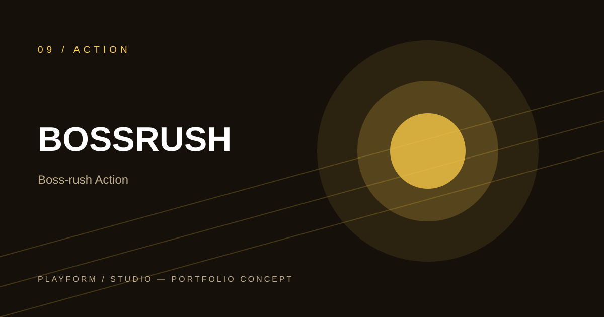

GAMES HAVE
WORLDS.
THEY DESERVE
THEIR OWN LOOK.
This is not twelve skins on one template. It is a collection of imagined game sites with different visual languages, original key art, real page content, motion, and little things to discover when you click around.
CHOOSE A WORLD TO ENTER.
12 PROJECTS · STATIC & INTERACTIVE · RESPONSIVE
 01 / 12↗
01 / 12↗VOIDFRONT
A classified military transmission from the edge of known space.
ENTER THE WORLD ↗
02 / 12↗MYTHOS: ASCENSION
A folklore-rich chronicle with illustrated lore, paths, and a living codex.
ENTER THE WORLD ↗ 03 / 12↗
03 / 12↗NEON RIFT
A pirate broadcast from an underground city that refuses to sleep.
ENTER THE WORLD ↗ 04 / 12↗
04 / 12↗DRIFTLINE CLUB
A late-night garage for people who remember the road, not just the lap time.
ENTER THE WORLD ↗
05 / 12↗PIXELHAVEN
A hand-crafted village with a garden you can actually plant in.
ENTER THE WORLD ↗
06 / 12↗IRONCLAD: FRONTLINES
A field command room built around maps, supply chains, and hard decisions.
ENTER THE WORLD ↗ 07 / 12↗
07 / 12↗DEEPWAKE
An abyssal console where the sonar becomes part of the story.
ENTER THE WORLD ↗ 08 / 12↗
08 / 12↗STARFORGE ACADEMY
A bright orbital academy with an interactive ship hangar and star map.
ENTER THE WORLD ↗
09 / 12↗BOSSRUSH
A comic-book arena with a small playable telegraph-reading training trial.
ENTER THE WORLD ↗ 10 / 12↗
10 / 12↗VERDANT PROTOCOL
An ecological restoration journal about balancing a living city.
ENTER THE WORLD ↗ 11 / 12↗
11 / 12↗LAST CHECKPOINT
A pixel-art cartridge with jumps, movement, a score, and memories to collect.
ENTER THE WORLD ↗ 12 / 12↗
12 / 12↗VELVET VEIL
A gothic casebook filled with contradictory witnesses and clickable evidence.
ENTER THE WORLD ↗THE WEBSITE IS PART OF THE GAME.
Each project has its own layout, typography, palette, illustration, animation language, and interactive section. The art is bundled locally as SVG, so the visuals do not disappear because an external image service changes. Every project is plain HTML, CSS, and JavaScript and can be published directly through GitHub Pages.